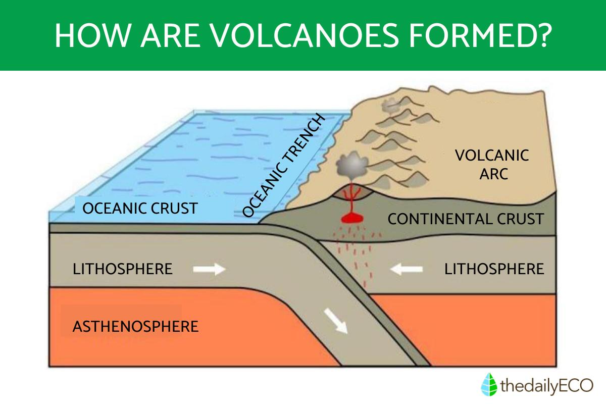

ABOUT VOLCANO
A volcano is an opening in the Earth's surface, usually a mountain, where molten rock (magma) and gases can escape from beneath the Earth's crust. These openings can erupt, sending lava, ash, and other debris into the air. Volcanoes are often found where tectonic plates meet or over mantle plumes.
Here's a more detailed breakdown:

Key Facts:
Definition:
A volcano is an opening in the Earth's surface where molten rock, gases, and other debris can erupt.
Formation:
They often form at the boundaries of tectonic plates, where the Earth's crust is broken into pieces.
Eruptions:
When magma erupts, it can flow as lava, send ash and rocks into the air, and cause explosions.
Types:
Volcanoes can be classified as active (currently erupting or likely to erupt), dormant (inactive but could erupt again), or extinct (not expected to erupt again).
Impact:
Volcanoes can shape landscapes, create fertile soil, and pose hazards to people and the environment.